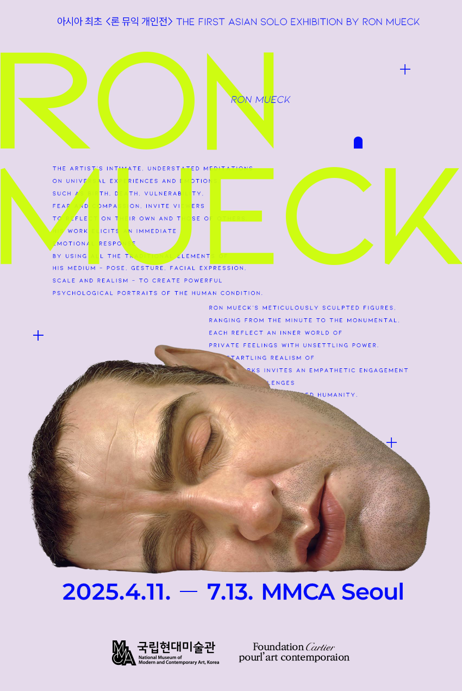
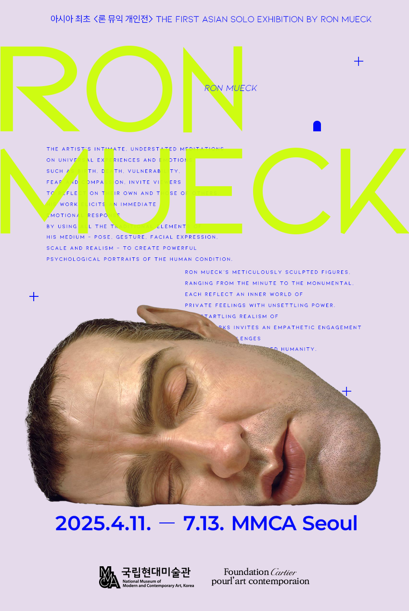

Portfolio Details
 

Project Information
- Category: Poster Design
Exhibition Poster
Goal
하이퍼리얼리즘 작가 론 뮤익의 전시 포스터로서, 그의 작업 특유의 정적이면서도 강렬한 감정을 시각적으로 표현하고, 대중의 호기심을 유발하는 것을 목표로 했습니다.
Concept
극사실주의 조각의 존재감을 부각시키기 위해 인물 조각 사진을 전면에 배치하였으며, 포스터에 몰입감을 부여했습니다.
Typography
"RON MUECK"을 대담하게 배치하여 아이덴티티를 강조하고, 실험적 구성으로 시선을 사로잡고자 했습니다.
주요 정보(전시 기간 및 장소)는 선명한 파란색으로 구분되어 가독성을 확보했습니다.